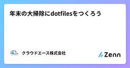
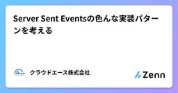
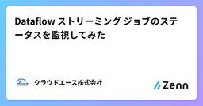

クラウドエース株式会社さんのフィード
https://zenn.dev/cloud_ace
クラウドエース株式会社 公式技術ブログです
フィード

年末の大掃除にdotfilesをつくろう 4
4
クラウドエース株式会社さんのフィード
こんにちは、クラウドエースの妹尾です。今回は趣向を変えて開発環境のお話をしたいと思います。この記事の執筆が2024年末なことを前提に見ていただければ幸いです。!前提として、僕の開発環境は以下です。Windows 11WSL2 + Ubuntu LTSなるべく多くの環境に沿うように記載していますが、一部の説明は WSL2 に依存している箇所があります。また、性質上 Windows を利用していても WSL2 を利用していないユーザの方の場合、この記事の内容を再現できないことがあります。ご了承ください。 はじめに(ここからの話は dotfiles とはちょ...
8日前

Server Sent Eventsの色んな実装パターンを考える
クラウドエース株式会社さんのフィード
こんにちは、クラウドエースの三原と申します。今回は Server Sent Events に関して紹介させていただければと思います。 Server Sent EventsとはServer-Sent Events は簡潔に言うとサーバーからクライアントへ一方通行且つリアルタイムにイベントデータを配信する技術です。アプリケーションのリアルタイム性を求められた際の選択肢の一つとして挙げられます。(他に要求を満たす技術として WebSocket、ポーリング等があります。)例として株価の監視やチャットツール等の他、代表例で言うと ChatGPT でモデルからの生成結果をユーザーに逐次...
8日前

Dataflow ストリーミング ジョブのステータスを監視してみた
クラウドエース株式会社さんのフィード
こんにちは。クラウドエース第三開発部の濵田です。さて、皆さんは、Dataflow ストリーミング ジョブのステータスを監視する際に、Canceled と Drained も監視したいと思ったことはありませんか。ジョブの指標では、Failed は提供されていますが、Canceled と Drained は提供されていません。そこで本記事では、ログベースの指標を用いて Dataflow ストリーミング ジョブのステータス(Failed、Canceled、Drained)を監視する方法について解説します。 はじめになぜ、このような記事を書こうと思ったのか。それは、弊社のサポート窓...
8日前

簡単導入！Vitestで始める高速で快適なフロントエンドテスト
クラウドエース株式会社さんのフィード
こんにちは、クラウドエースの赤嶺と賀です。今回は単体テストに使用した「Vitest」というツールについて、同僚の賀と一緒に調査し、思ったこと感じたことをご紹介します。 Vitest とはVitest は、JavaScript と TypeScript のテストフレームワークで、特に Vite プロジェクトと連携して高速なテストを実行できます。軽量で設定が簡単なため、効率的にテストを行い、プログラムのバグを素早く検出・修正できます。 今回 Vitest を導入した理由1．高速なパフォーマンス Jest と比較した際の実行時間が約 60%程度短縮されたという結果がある...
8日前
Git とは？ Google Cloud との連携
クラウドエース株式会社さんのフィード
こんにちは！2024年度にクラウドエース株式会社に新卒入社しました、第二開発部の三浦です。 Git初心者のためのGitの解説 Gitとは？Gitは、ソフトウェアの開発においてソースコードの変更履歴を管理するための分散バージョン管理システムです。 バージョン管理システムの基本バージョン管理システム（Version Control System, VCS）は、プログラムやドキュメントの変更履歴を記録・管理するためのシステムです。特にソフトウェア開発で頻繁に使われており、以下のような機能や利点を提供します。変更履歴の管理各ファイルの変更履歴が保存され、誰が、いつ、どのよ...
9日前
Migarte to Containers を使用して Web アプリケーションをお手軽に GCE から GKE へ移行
クラウドエース株式会社さんのフィード
はじめにこんにちは。クラウドエースの中野(大)と申します。今回は Google Cloud の移行プロダクトの 1 つである Migrate to Containers を使用して GCE 上の Web アプリケーションを GKE へ移行した際の手順や自分なりのポイントについて執筆しました。 この記事の位置付け今後 仮想マシン (VM) から GKE へ Web アプリケーションを移行したいと考えている方や Migrate to Containers の名前を知っているが、使用方法が分からないといった方に向けて執筆しました。 Migrate to Containers...
10日前
Pub/Sub の Cloud Storage import Topic について紹介
クラウドエース株式会社さんのフィード
こんにちは、クラウドエース株式会社 第一開発部の阿部です。本日は 2024 年 11 月 6 日にリリースされた Pub/Sub Cloud Storage import Topic について紹介します。こちらは Jagu'e'r Advent Calendar 2024 の 10 日目の記事としても書きました。(開いていたためそうしました。) 概要今回リリースされた機能の前に、Pub/Sub の概要について説明します。 Pub/Sub とはPub/Sub は、Google Cloud のメッセージングサービスであり、様々なシステム間でメッセージを送受信するためのサービス...
10日前
Application Integration でお世話になった人へクリスマスメッセージを贈ろう
クラウドエース株式会社さんのフィード
はじめにこんにちは。クラウドエースの間瀬です。本記事は Jagu'e'r Advent Calendar 24 日目の記事になります。今回は Google Cloud が提供する Application Integration という比較的新しいサービスが持つメール送信の機能を使ってみたいと思います。 Google Cloud でメールを扱う方法は限られているGoogle Cloud には Amazon SES のようなメールを送受信するためのサービスがないため、メールの扱いに困ることがあると思います。現状、Google Cloud が提供する機能でメールを扱う方法は以下...
11日前
Google Cloud の「限定公開の Google アクセス」って何？
クラウドエース株式会社さんのフィード
はじめにこんにちは、クラウドエース株式会社 第三開発部の新卒、中村です。本記事では限定公開の Google アクセスについて、IT 経験が少ない人と同じ目線に立って紹介していきます。 限定公開の Google アクセスとは？限定公開の Google アクセスを簡単に説明すると、セキュリティなどの観点で外部との接続が許可されていないリソースから、Google の API やサービスに接続できる限定的なアクセス方法を付与する機能です。VM インスタンスなどの Google Cloud のリソースは、セキュリティ強化を目的として必要以上に外部と接続できないように設定することが一...
12日前
Cloud Storage Bucket Ip filtering について解説
クラウドエース株式会社さんのフィード
こんにちは、クラウドエース株式会社 第一開発部の阿部です。今回は Cloud Storage Bucket IP filtering について解説します。Jagu'e'r Advent Calendar 2024 の 9 日目の記事としても投稿しています。(開いていたので投稿してみました。) Cloud Storage とは (おさらい)Cloud Storage は、Google Cloud のオブジェクトストレージサービスであり、様々なファイル(非構造化データなど)を保存するためのサービスです。弊社エンジニアによる入門者向けのブログ記事がありますので、詳細は下記のブログ記...
12日前
Firebase Genkit と Next.js で構築する：お手軽生成 AI WebApp
クラウドエース株式会社さんのフィード
こんにちは！クラウドエースの河野です。この記事では Firebase Genkit と Next.js を使って、生成 AI を活用したシンプルな Web アプリを構築する方法を、初心者にも分かりやすく解説します。!Firebase Genkit は現在ベータ版です（2024年12月16日時点、バージョン v0.9）。今後の更新において下位互換性がない変更が加えられる可能性がある点にご注意ください。 このガイドで得られるものFirebase Genkit を使った生成 AI 機能の効率的な実装方法Next.js を活用したレスポンシブな Web アプリの作成V...
16日前
Cloud Build の結果を Slack に通知する方法
クラウドエース株式会社さんのフィード
クラウドエースの北野です。Cloud Build の結果を Slack に通知する方法を紹介します。 概要Cloud Build を以下のシステム構成で Slack に通知させます。Pub/Sub に Cloud Build の結果の通知Secret Manager、Cloud Storage に Slack の通知先情報と、通知するメッセージの内容の保存Cloud Build Notifier を使い Slack に通知 はじめにCloud Build の承認機能の利便性や、Google Cloud に閉じたシステムで CI/CD パイプラインを構築できる点か...
16日前
Cloud Storage FUSEが便利なので、この辺で一旦理解を深めておく
クラウドエース株式会社さんのフィード
はじめにこんにちは。クラウドエースの間瀬です。本記事は Google Cloud Champion Innovators Advent Calendar 2024の 18 日目の記事になります。しばらく記事投稿ができていなかったのですが、Advent Calendar に参加することで重い腰を上げることができました。今回は Google Cloud のオブジェクトストレージサービスである Cloud Storage( 以下、GCS ) に関連する FUSE という機能について少し踏み込んで理解を深める記事をお届けしたいと思います。私自身は本機能について実務で使ったことはなかっ...
17日前
Google Cloud への移行を支援するプロダクトの紹介
クラウドエース株式会社さんのフィード
こんにちは、クラウドエース株式会社 第一開発部の阿部です。この記事は Champion Innovators Advent Calendar 2024 の 16 日目の記事です。 はじめに現在、私はクラウドエース株式会社における Infra Modernization 支援パートナーとして、お客様の Google Cloud 移行の支援を担当しています。オンプレミス環境といっても多種多様な環境やビジネスがあり、それに合わせた移行方法を提案することが求められます。この記事では、そうしたオンプレミス環境からの移行を支援する代表的な Google Cloud プロダクトについてご紹...
20日前
Google Cloud 主催第 3 回 TAP Meetup へ参加！
クラウドエース株式会社さんのフィード
こんにちは、クラウドエースの安田です。今回は、12 月 9 日(月)に行われた、Google Cloud 主催の第 3 回 TAP Meetup へ参加した際の様子を紹介します。 TAP Meetup について最初に、TAP についてご紹介します。Tech Acceleration Program (以降 TAP と呼びます) は Google が提供する内製化支援です。数日にわたって行われるアジャイル型ワークショップで、迅速かつ効果的なアプリ開発を体験するものです。TAP Meetup は、TAP への参加経験者間の交流会となっており、LT やグループディスカッションを通...
22日前
Dataform と BigQuery ML で実現するテキスト分析パイプラインの構築
クラウドエース株式会社さんのフィード
はじめにこんにちは。クラウドエース第三開発部の泉澤です。本記事では、Google Cloud のサービスである Dataform と BigQuery ML を使って、LLM による「テキスト分析パイプライン」を構築する方法をシェアします。業務で BigQuery ML を使ってテキスト分析を実施した経験があるのですが、プロンプトや LLM のパラメータを設定する必要があるため、他の処理も同じクエリで行おうとするとクエリが複雑になり、可読性が下がりやすいと感じました。Dataform を使えばクエリを分割しつつも、一連のワークフローとして管理でき便利そうだと思い、この記事を書...
22日前
作業端末から本番環境の Cloud SQL, AlloyDB のプライベート IP インスタンスへのアクセス
クラウドエース株式会社さんのフィード
クラウドエースの北野です。SSH ポートフォワーディングによるローカル端末から Cloud SQL と AlloyDB のプライベート IP インスタンスにアクセスする方法を紹介します。 概要ローカル端末から インスタンスにアクセスするシステム構成は以下の通りです。COS インスタンス上の Auth Proxy プロセスによる Cloud SQL, AlloyDB インスタンスへの接続作業端末から COS インスタンスへの SSH ポートフォーワーディグによる Cloud SQL, AlloyDB インスタンスへの接続Compute Engine に SSH ポートフ...
24日前
Google SecOps：SOAR のケース管理でインシデント対応を効率化！
クラウドエース株式会社さんのフィード
はじめにこんにちは、クラウドエースの小田です。Google Security Operations（以下、Google SecOps）における SIEM については、過去記事でご紹介したようにさまざまなソースからセキュリティイベントログを収集・分析し、脅威の兆候を検知する役割を担います。しかし、SIEM だけでは、検知された脅威への対応が手動で行われるケースが多く、迅速な対応が難しいという課題がありました。そこで注目されているのが、SIEM とシームレスに連携する SOAR を用いて脅威への対応を自動化し、人手に頼っていた作業を効率化するという解決策があります。Google...
25日前
Google Cloud の Cloud SQL って何だろう?
クラウドエース株式会社さんのフィード
はじめにこんにちは！クラウドエース株式会社の金井です。今回は初学者向けに Google Cloud の Cloud SQL について書かせていただきます。Cloud SQL はフルマネージドなリレーショナル データベースを提供するサービスですが、これだけでは何ができるかイメージしにくいと思います。そこで今回の記事では Cloud SQL の機能について簡単に説明した後、コンソールでの作成方法を紹介していきます。 Cloud SQL とはまず Cloud SQL が何かを公式ドキュメントから見てみましょう。Cloud SQL は、MySQLPostgreSQLS...
25日前
[合成モニタリング] Google Cloudでユーザー操作を監視する
クラウドエース株式会社さんのフィード
はじめにこんにちは。クラウドエース第三開発部の工藤です。Google Cloud の Cloud Monitoring では合成モニタリングという機能を提供しています。この機能を使用することで一般的に合成監視や外形監視と呼ばれる監視を行うことができます。本記事では、 Cloud Monitoring の合成モニタリングがどのようなものか、どのように作成するかなど解説していきます。また、本記事と合わせて、弊社エンジニアによる以下のブログ記事も参照ください。こちらは preview 段階の記事となりますが、より理解を深めることができるかと思います。https://zenn....
25日前